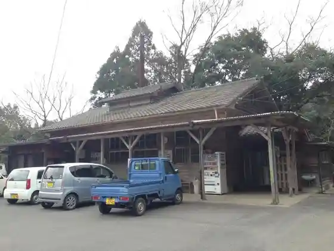
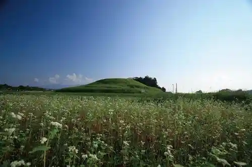
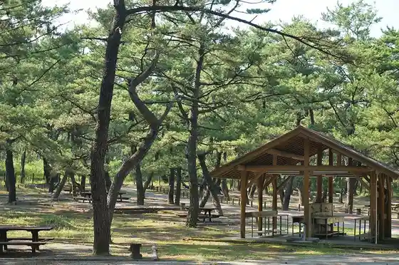

Shino Dan Onsen (Hisashi Yu)
Osaki, Kagoshima · 099-478-3778 · Official / source link

Nichinankaigan Kokuteikoen Kuni no Matsubara Segueigaido Tour
Osaki, Kagoshima · 099-476-3611 · Official / source link
Yokose Burial Mound (Zenpo Koen Fun)
Osaki, Kagoshima · 099-476-1111 · Official / source link

Kuni no Matsubara Campground
Osaki, Kagoshima · 099-476-3611 · Official / source link

Tsuma (Tsuma Man) Shrine (Osaki Kazuyuki Miya)
Osaki, Kagoshima · 099-476-0588 · Official / source link
Seto Mabushi Hashi (Setomabushi)
Osaki, Kagoshima · 099-477-2400 · Official / source link
Teruhi Shrine
Osaki, Kagoshima · 099-476-1111 · Official / source link
Fureai no Sato Koennai Nippon Garden
Osaki, Kagoshima · 099-476-1111 · Official / source link
Shiki Forest Tochika
Osaki, Kagoshima · 099-476-1111 · Official / source link
Kyosoba no Furusato Information Center Minamikyushu Renraku Center
Osaki, Kagoshima · 099-478-3015 · Official / source link
Hishita no Kosumosu
Osaki, Kagoshima · 090-1583-3384 · Official / source link
Jaku Ichi Shrine (Osaki Sannomiya)
Osaki, Kagoshima · Official / source link
Kuni no Matsubara Masu Maru Puru
Osaki, Kagoshima · 099-476-3611 · Official / source link
Jiryu Shrine (Osaki Ni Yuki Miya)
Osaki, Kagoshima · Official / source link
Osaki Chuo Kominkan Kyodo Shiryo Tenjishitsu
Osaki, Kagoshima · 099-476-0548 · Official / source link
Unagi Taro
Osaki, Kagoshima · 0994-63-3515 · Official / source link
Ikoi Forest (Kusano Oka)
Osaki, Kagoshima · 099-476-1111 · Official / source link
Dokyo Ri Ni Kiku So Suzume Monyo Ichimen
Osaki, Kagoshima · 099-476-0548 · Official / source link
Osaki Shokuno Koryu Kan
Osaki, Kagoshima · 099-476-0883 · Official / source link
Kariyado no Nagedon (Tabu no Ki)
Osaki, Kagoshima · 099-476-1111 · Official / source link
Jiryu Todoroki Falls
Osaki, Kagoshima · Official / source link
Osaki Jiryu Chiku (Hotaru Village)
Osaki, Kagoshima · 099-477-2400 · Official / source link